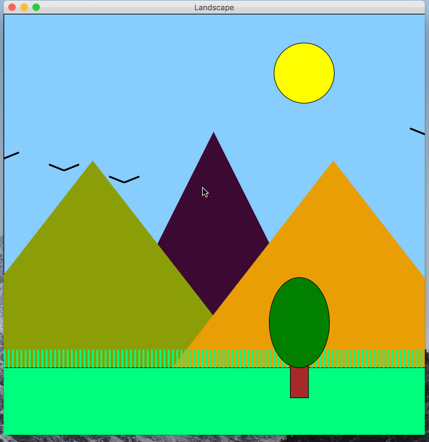
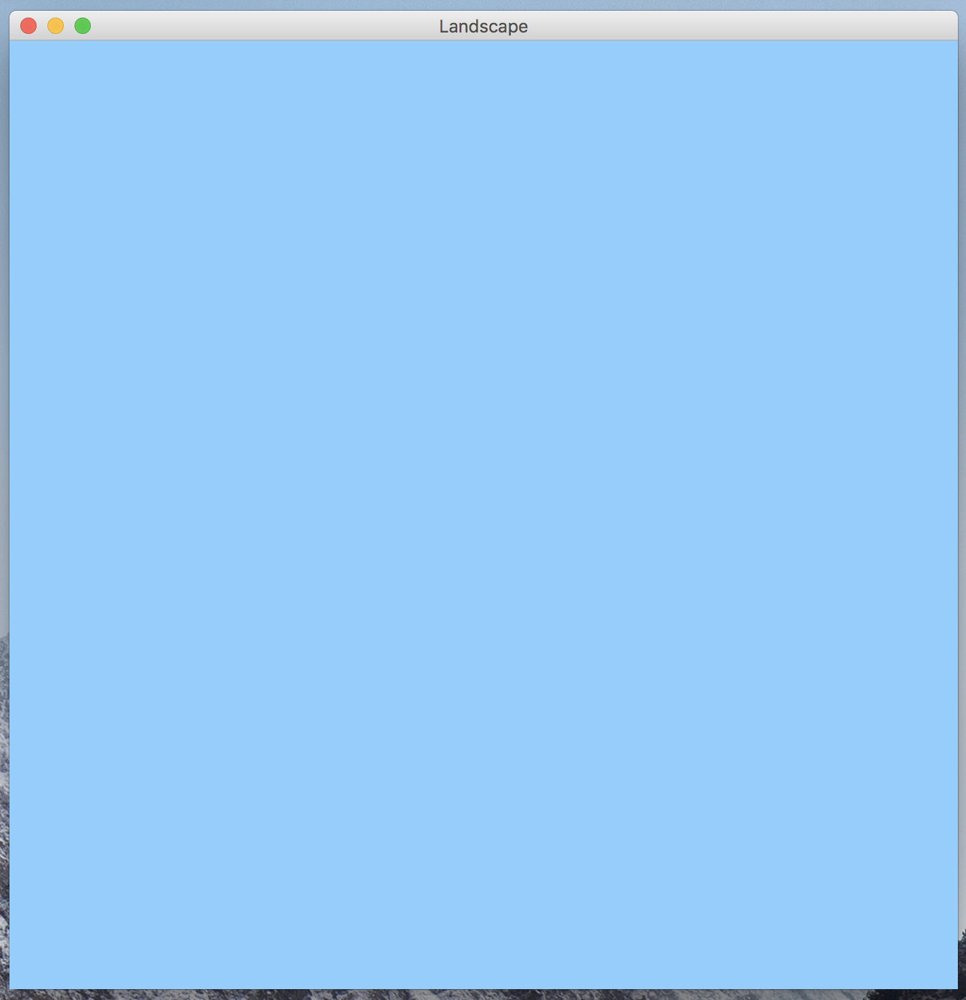
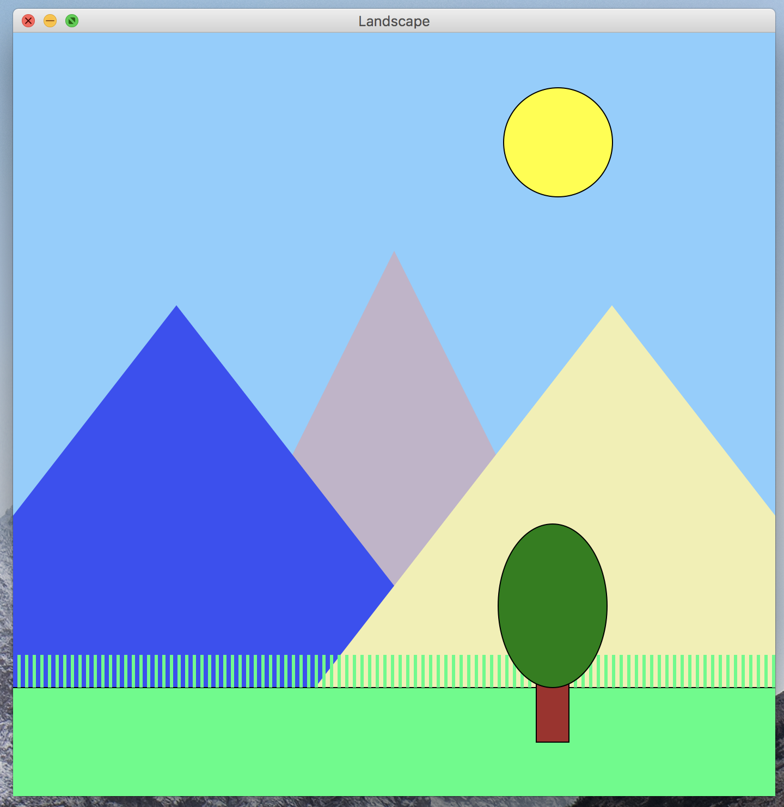
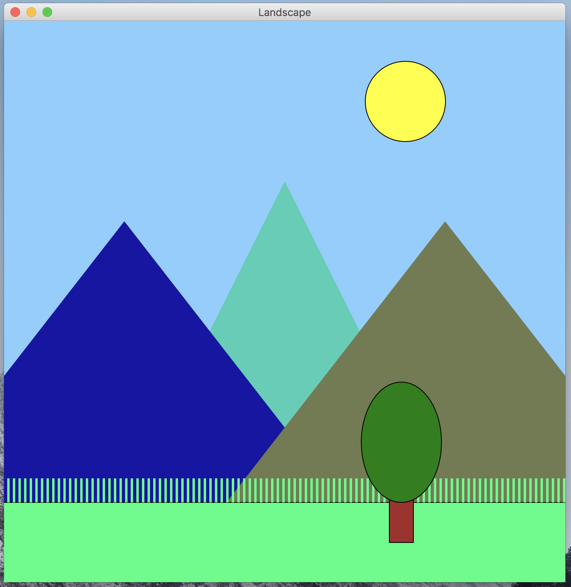
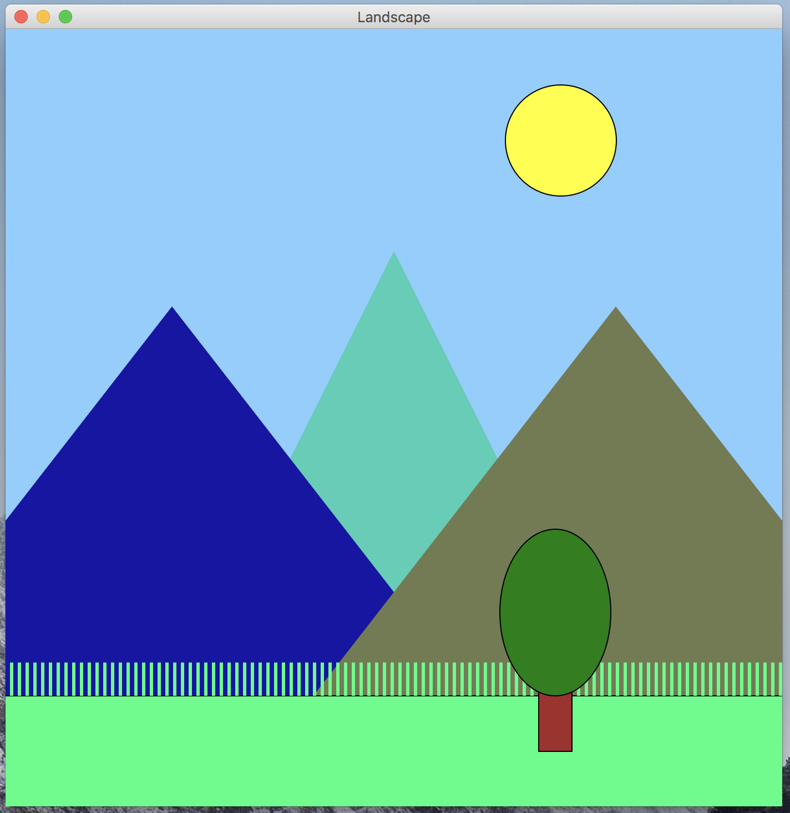
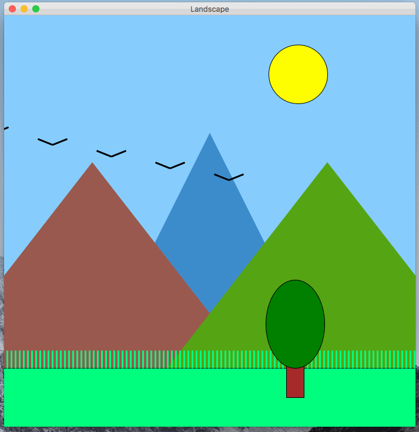
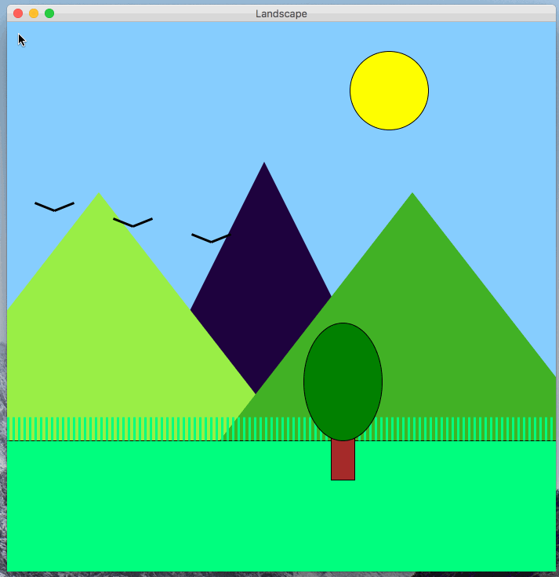

In this programming assignment, you will be building a program that displays a landscape in a graphics canvas and allows the user to control the perspective of the landscape by moving the mouse. The perspective seems to change due to an effect called motion parallax, which you should implement in this program. The above gif shows an example of the user interacting with a completed version of the program.
You should follow the below guidelines when designing your landscape.
motion_parallax.py.get_color_string function to help you go from random numbers to a valid color string.All of the graphics should be displayed using the graphics.py module.
Remember to put graphics.py in the same directory as motion_parallax.py.
You can refer to the slides from section if you forgot how to work with the graphics module.
This program does not take any input values from the command-line, and does not need to print anything on the command-line either.
Also, there will be not autograder tests on Gradescope for this. The SLs will grade submissions by trying to run your programs. Thus, you should be careful to make sure your program behaves very similar to the examples that are shown on this spec.
This program must follow the style guidelines.
You should structure all of the code into functions.
The only code that is allowed to not be in a function are your import statements and a call to main().
You should create a function for each visual component / category in the program.
For example, you might create one function to draw the birds, another function to draw the foreground, etc.
As you can see in the example, the perspective of the landscape changes as the mouse moves.
When the mouse moved up/down (y axis), the perspective follows. The components of the landscape move upwards/downwards. Similarly, when the mouse moved left/right (x axis), the perspective follows. The components of the landscape move left/right.
If you pay close attention, You’ll notice that the some components on the canvas move more than others as the mouse moves. This effect is a cue to your visual system and brain that the objects that more more are closer, and the objects that move less are farther away. This is referred to as parallax or motion parallax. You can read about it more on the parallax Wikipedia page.
You should divide the components of the landscape into four layers:
Each layer should move as the mouse moves, but the amount of movement should be different depending on the layer to achieve the visual parallax.
Don’t try to tackle the entire program at once. Work on one component at a time, and work on getting the program to function similarly to the example one component at a time. Below are some steps that you may consider following.
Initially, get a program that generates a square canvas, and fill the canvas with a blue rectangle. The blue rectangle can serve as the sky.

Next, work on getting a static landscape displayed. At this point, don’t worry about the motion parallax, random mountain colors, or the birds. The shapes will be added the canvas in the order you add them programatically. Thus, to get one shape to show up above another, draw it after. Thus, draw layer 1 first, then 2, then three, and then 4.
Update the program so that it generates three random colors for the mountains on each program run. In order to test, run the program a few times and check if the color of each mountain changes.

 

Next, add the flying birds to the canvas. You should use a while loop. Also, the modulus operator can be used in the code to get the birds ti wrap around the canvas.

Finally, add in the parallax!
Before you attempt to code it up, take some time to think how you should accomplish this. Take a close look at the example earlier in the spec and the one below. You should compute a value that you can use to offset the positions of the shapes in each layer. You should use the x and/or y mouse positions in the calculations of the offsets. If you forgot how to access the x and y position of the mouse, check the slides!

This PA is due on Friday, October 5th, at 5pm. You should turn it in on Gradescope. Remember: there are not going to be autograder test cases, so do the best you can to match the correct behavior described and shown in the spec.